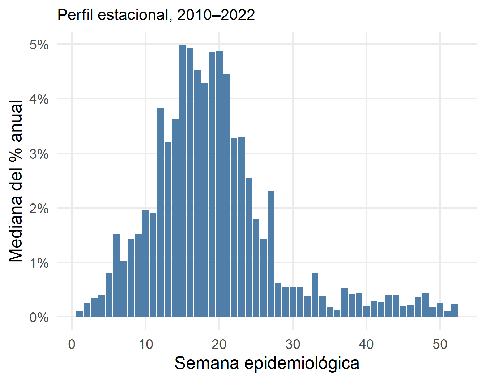
Inteligencia Sanitaria · Sesión 3
2026-11-23
En el taller se presenta el Avance 1.
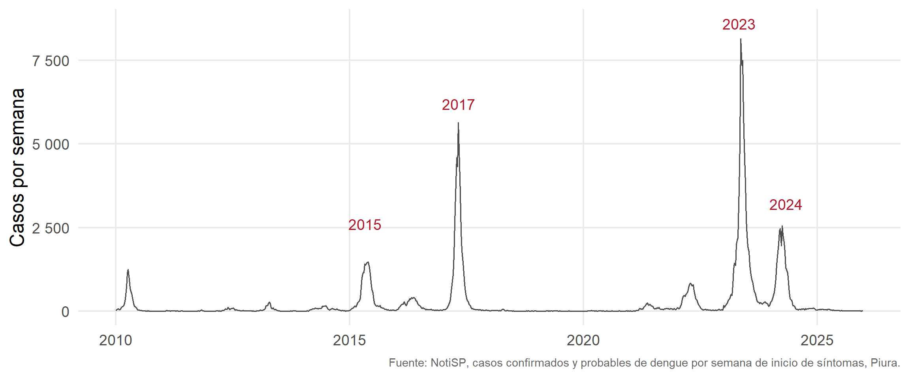
Años con pocos casos (2018–2020) alternan con epidemias grandes. ¿Qué es entonces un año «normal»?
Detectar una señal es decidir si lo que vemos excede lo que la tendencia y la estacionalidad permitirían esperar.

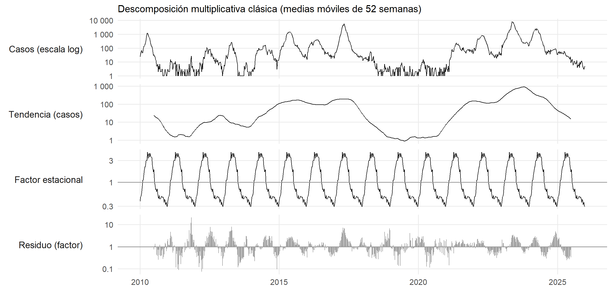
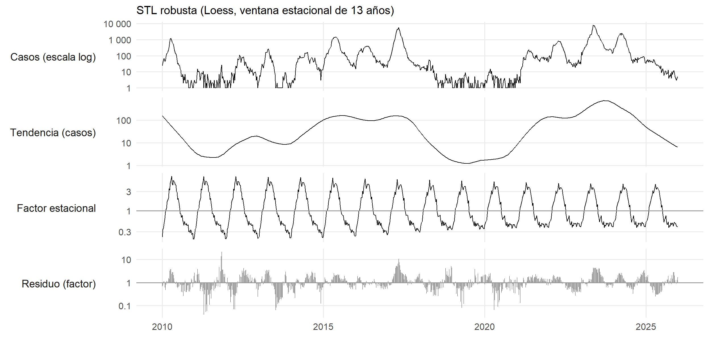
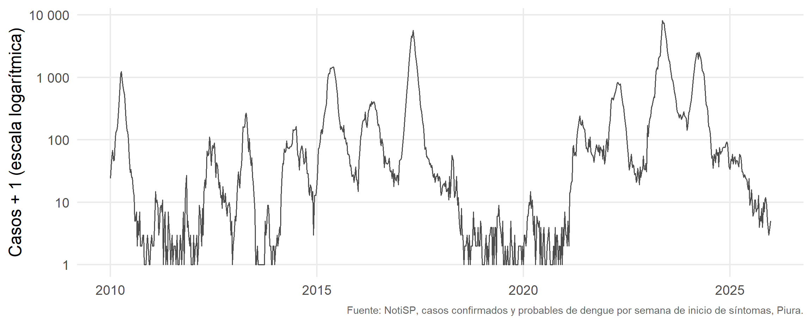
En escala logarítmica se ve el inicio de cada epidemia y los años bajos dejan de parecer planos. ¿Cuál le mostraría a un director regional?
Toda línea basal depende de decisiones que hay que declarar:
| Decisión | Opciones | Efecto |
|---|---|---|
| Años de referencia | 5 a 7 años previos | Más años: más estable, pero menos actual |
| Años epidémicos | Incluir o excluir (por ejemplo, 2017) | Incluirlos sube el umbral y retrasa la alerta |
| Medida central | Mediana, media, media geométrica | La media se deja arrastrar por los picos |
| Límite superior | Q3, media + 2 DE, percentil 95 de un modelo | Define cuántas falsas alarmas se aceptan |
| Unidad | Casos o tasas | Las tasas corrigen cambios de población |
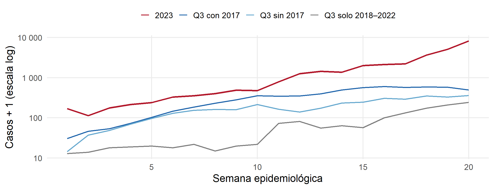
En la SE 10, el Q3 es 356 con 2017, 214 sin 2017 y 21 con solo 2018–2022. La elección de los años decide qué tan pronto aparece la alerta.
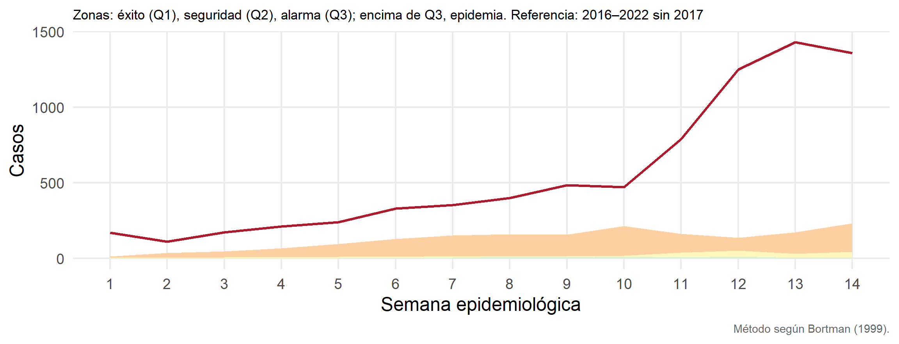
Con esta referencia, 2023 está en zona epidémica desde la SE 1 (Bortman 1999).
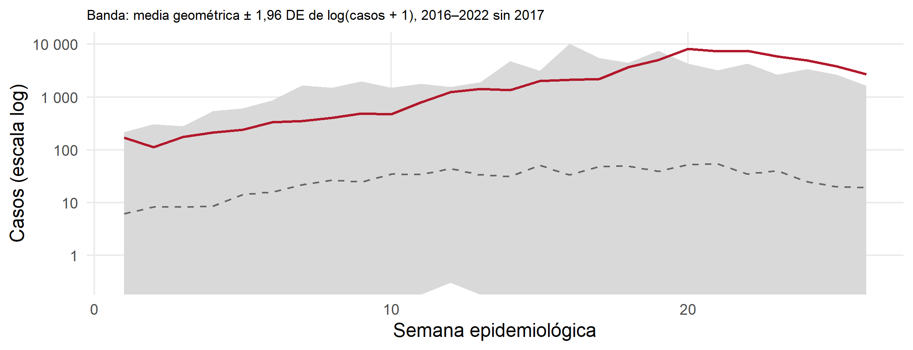
Con este método, 2023 recién supera el límite en la SE 20, la semana del pico.
| Método | Referencia | Primera semana de 2023 con señal |
|---|---|---|
| Canal por cuartiles (Q3) | 2016–2022 sin 2017 | SE 1 |
| Regresión estacional cuasi-Poisson (límite 97,5 %) | 2015–2022 sin 2017 | SE 1 |
Farrington flexible (paquete surveillance) |
5 años previos | SE 6 |
| Media geométrica ± 1,96 DE | 2016–2022 sin 2017 | SE 20 |
¿Por qué tanta diferencia? La media geométrica usa la variabilidad entre años, y en Piura esa variabilidad es enorme (años casi sin casos y años con miles). Con una banda tan ancha, casi nada la supera.
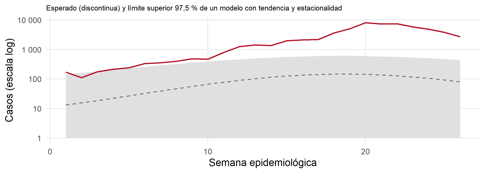
casos ~ tendencia + sen(2πs/52) + cos(2πs/52), con sobredispersión. Es la idea de Serfling (1963), usada hasta hoy para exceso de mortalidad.
Propuesto por Farrington et al. (1996) y mejorado por Noufaily et al. (2013). Fue desarrollado para la vigilancia automatizada de Inglaterra y Gales. En R está en el paquete surveillance (Salmon et al. 2016).
| Situación | Opción razonable |
|---|---|
| Serie larga, estacional, conteos altos (dengue en Piura) | Canal endémico o regresión estacional |
| Muchos eventos y territorios a la vez | Algoritmo automático (Farrington mejorado) |
| Conteos bajos (tos ferina fuera de Loreto) | Umbrales basados en Poisson; mirar meses en vez de semanas |
| Enfermedad en eliminación (sarampión) | Cada caso confirmado es señal; analizar cadenas y tiempo entre casos |
| Serie corta (menos de 5 años) | Comparar con semanas previas del mismo año; tendencia reciente |
El método se elige según la pregunta y los datos, y se declara en el informe.
| Método | Dónde se usó | Qué hicieron |
|---|---|---|
| Farrington | Inglaterra y Gales | Detección automática semanal de brotes en datos de laboratorio (Farrington et al. 1996; Noufaily et al. 2013) |
| Línea basal estacional | Red EuroMOMO, Europa | Exceso de mortalidad por COVID-19, marzo–abril de 2020 (Vestergaard et al. 2020) |
| Alerta temprana con clima | Brasil, 2014 | Riesgo de epidemia de dengue durante la Copa Mundial (Lowe et al. 2014) |
| Nowcasting bayesiano | Alemania, 2011; Brasil; Puerto Rico | Brote de STEC O104:H4, InfoDengue y dengue con NobBS (Höhle y an der Heiden 2014; Bastos et al. 2019; McGough et al. 2020) |
Con análisis de ondículas (wavelets) de la vigilancia semanal provincial de 1994–2008, las epidemias de la selva tuvieron su pico hacia marzo y las de la costa hacia abril–mayo, unas 6 semanas después. La diferencia se asoció al ciclo de la temperatura (Chowell et al. 2011).
Para revisar: dinámica de largo plazo en Iquitos · clima y riesgo de brotes, 2000–2018 · dinámica temporal y espacial, 2000–2022
Pregunta: si la costa llega al pico unas semanas después que la selva, ¿cómo usaría esa diferencia un equipo de inteligencia nacional?
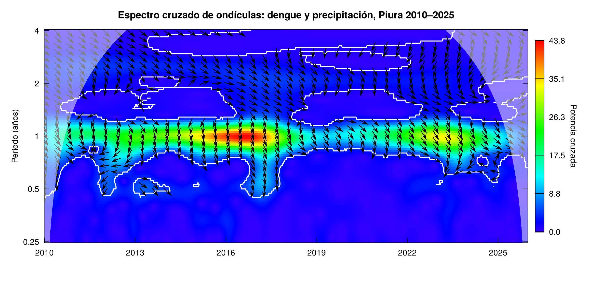
Ciclo anual compartido, más intenso en 2015–2017 y 2022–2024. Flechas hacia abajo: la lluvia va adelante.
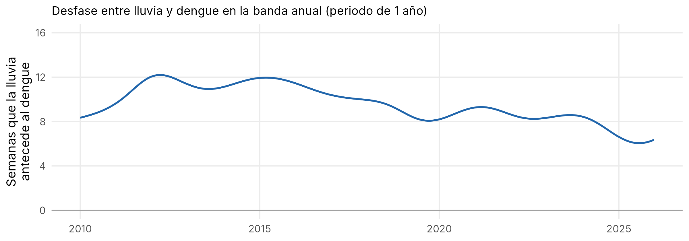
Entre 6 y 12 semanas (promedio: 9,6). Es la ventana que aprovecha una alerta temprana con clima; la usaremos en la S5. Compartir un ciclo no prueba causalidad (Cazelles et al. 2008).
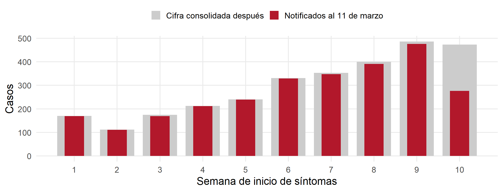
Al cierre de la SE 10 se conocían 276 de los 473 casos de esa semana. La curva parecía bajar.
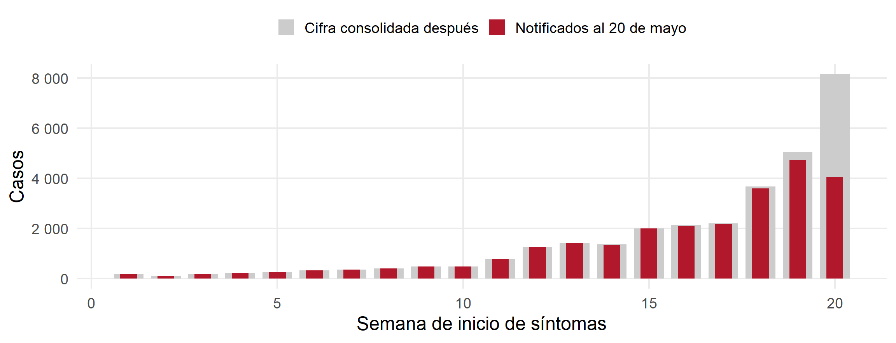
Al cierre de la SE 20 se conocían 4062 casos de esa semana; la cifra final fue 8151. El pico se veía como un descenso.
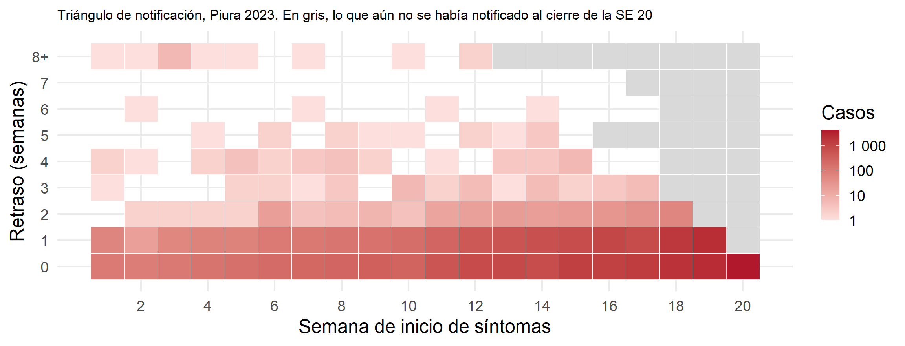
Cada semana reciente tiene celdas vacías: casos que ya ocurrieron pero aún no se notifican. El nowcasting estima esas celdas con lo que sabemos de los retrasos.
Para una semana \(t\), al cierre solo se observan los casos notificados con retraso de hasta \(d_t\) semanas:
\[n_t^{\text{obs}} \mid N_t \sim \text{Binomial}(N_t,\ F(d_t))\]
Los modelos usados en la práctica agregan dos cosas: una curva epidémica suavizada (por ejemplo, un paseo aleatorio en \(\log N_t\)) y retrasos que cambian en el tiempo (Höhle y an der Heiden 2014; McGough et al. 2020). InfoDengue, en Brasil, aplica este enfoque a dengue (Bastos et al. 2019).
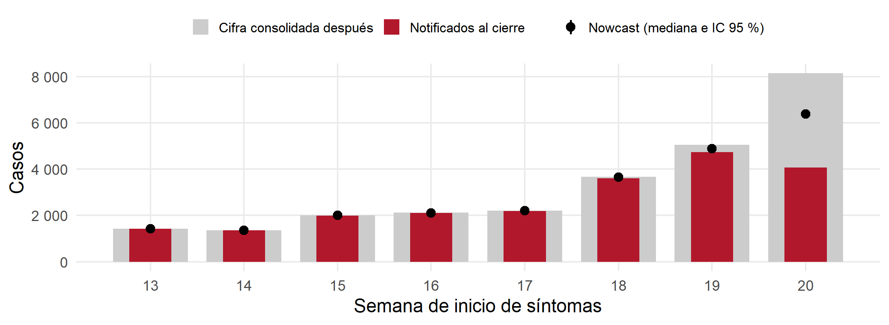
Para la SE 20: se conocían 4062 casos; el nowcast estimó 6386 (IC 95 %: 6207–6574); la cifra final fue 8151. El modelo corrige gran parte del falso descenso, pero se queda corto.
surveillance::nowcast (Höhle y an der Heiden 2014), NobBS (McGough et al. 2020) y epinowcast.Para la decisión: presentar las semanas recientes como provisionales, con el nowcast y su incertidumbre, y no concluir que hay descenso con las últimas 1 o 2 semanas.
| Hay brote | No hay brote | |
|---|---|---|
| Alarma | Verdadero positivo | Falsa alarma: brigadas y credibilidad gastadas |
| Sin alarma | Señal perdida: respuesta tardía | Verdadero negativo |
Antes de recomendar, el equipo verifica:
Es la SE 6 de 2023. Su equipo corrió tres métodos:
En salas, respondan en el documento compartido:
Cualquier integrante puede responder las preguntas.
Inteligencia Sanitaria · DEAEA, FASPA-UPCH · S3